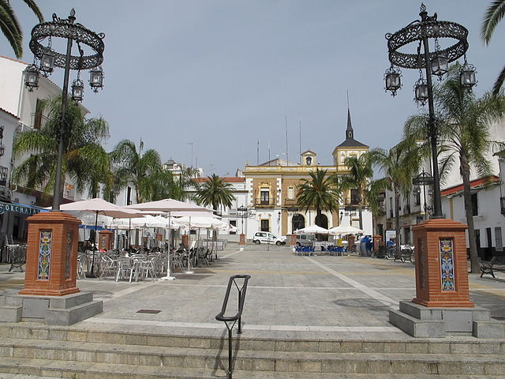

Biografia
Valverde del Camino
Valverde del Camino es un municipio y localidad española de la provincia de Huelva, en la comunidad autónoma de Andalucía. Con una población de 12 721 habitantes, se encuentra situado entre los valle de los ríos Tinto y Odiel, en la comarca del Andévalo. Alli es donde creci y donde estudie hasta cumplir 18 años. Mi epoca de estudiande en Valverde comenzo en el colegio Menendez y Pelayo donde estudie hasta 6 de primaria. Despues tenias que decidir entre los dos institutos que se encuentran en el mismo pueblo, elegi el instituto Diego Angulo donde acabe la educacion obligatoria (ESO) y tambien el bachiller, en mi caso, el tecnologico.

Epoca universitaria en Sevilla
A los 18 años comence mi epoca de studiante universitario en Sevilla,
matriculandome en igenieria informatica. Tras pasar el primer año
decidi, cambiar de carrera y elegi Ciencias Politicas y de la
Administracion. Siempre tuve claro que queria estudiar ingeniera
informatica o Ciencias Politicas. Tras cinco años de estudio me gradue
como Politologo en la Univerisdad Pablo de Olavide y me especialice en
la Administracion Publica. Por esta razon, continue mis estudios
matriculandome en el master de Gestion Administrativa donde me gradue
al año obteniendo el titulo de Gestor Administrativo.
Primera etapa laboral
Tras graduarme como Gestor Administrativo me contrataron en mi trabajo
en una gestoria de Montequinto. En este trabajo sente los
conocimientos obtenidos en el master, realizando diversas tareas
(algunas no enseñadas en la universidad, como atender al publico). Mi
dia a dia consistia en realizar todo tipos de tramites: presentacion
de impuesto, cambios de titularidad de vehiculos, exportaciones,
etc...
Segunda etapa laboral
Al año de estar trabajando en la gestoria, encontre la oportunidad de
cambiar de trabajo en una startup sevillana (Openwebinars). Decidi
cambiar de trabajo porque me ofrecian una oportunidad de crecer a
nivel indivual en el etorno tecnologico.Ahi fue donde me encontre de
nuevo con el mundo tecnologico y donde decidi tras acabar mi contrato
con ellos volver a estudiar algo relacionado con la informatica.